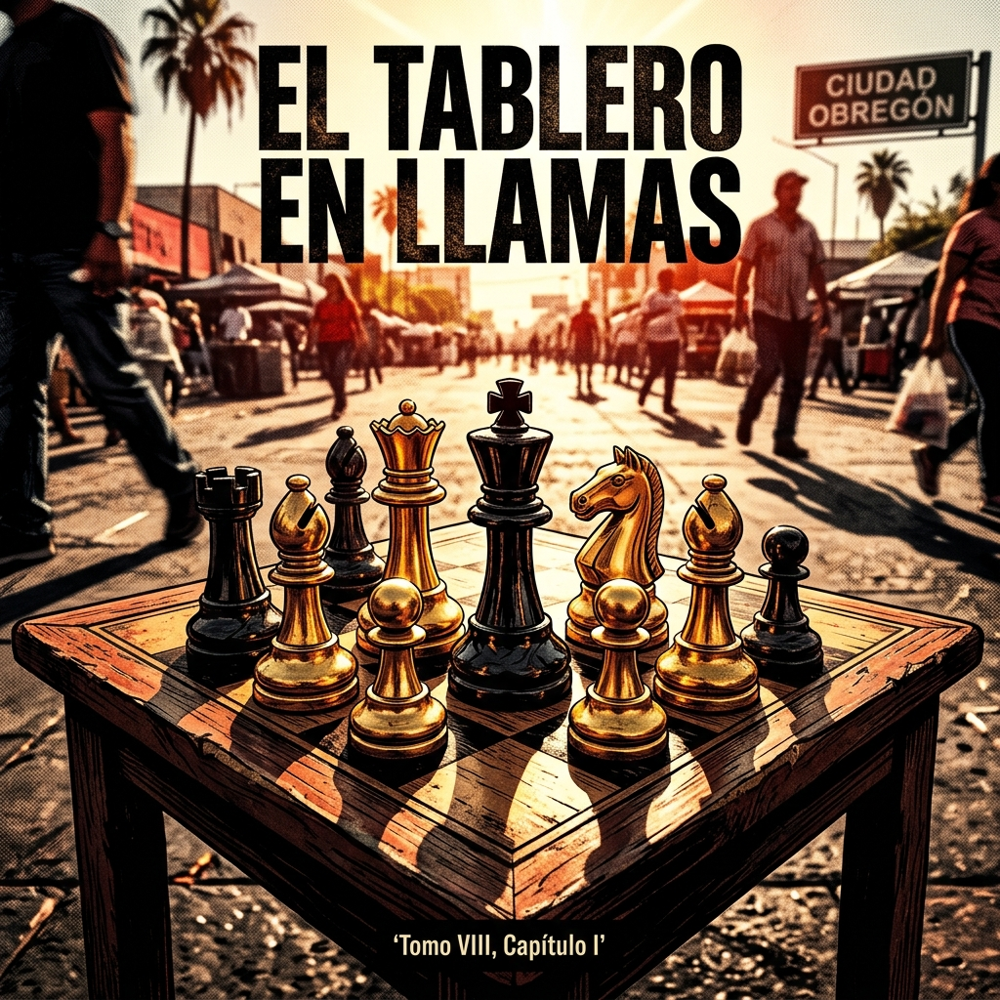
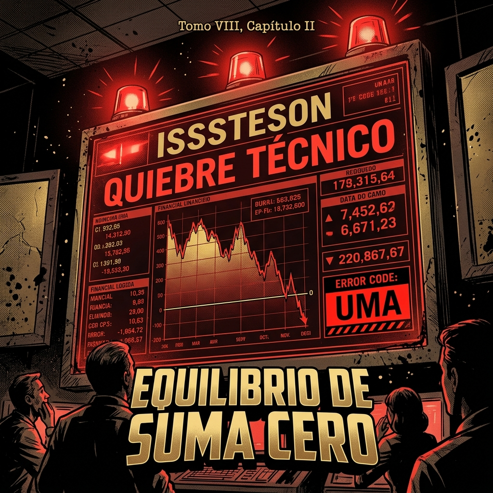
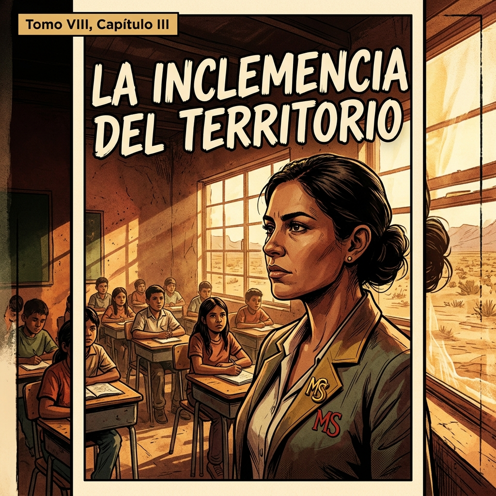

1. El Tablero en Llamas
Dice la Teoría de Juegos que todo equilibrio estático es, en el fondo, una trampa. En Sonora, el magisterio ha estado atrapado en un equilibrio de suma cero. Si la autoridad ahorra, el docente pierde. Si el sistema sobrevive, la pensión agoniza.

2. Equilibrio de Suma Cero
Y mientras los números en la Ciudad de México dictan nuestra pobreza con la UMA, aquí en el territorio, nuestra gente siente la inclemencia. No es solo dinero, compañero... es el tiempo de una vida entregada al aula.

3. La Inclemencia del Territorio
El rostro de la resistencia magisterial en el aula. Condiciones precarias, calor extremo, pero una voluntad inquebrantable. Mtra. Paloma liderando desde la base.

4. La Ley de la Escalada
Próximamente... El protocolo de sincronización técnica para la victoria.
Cargando estrategia...